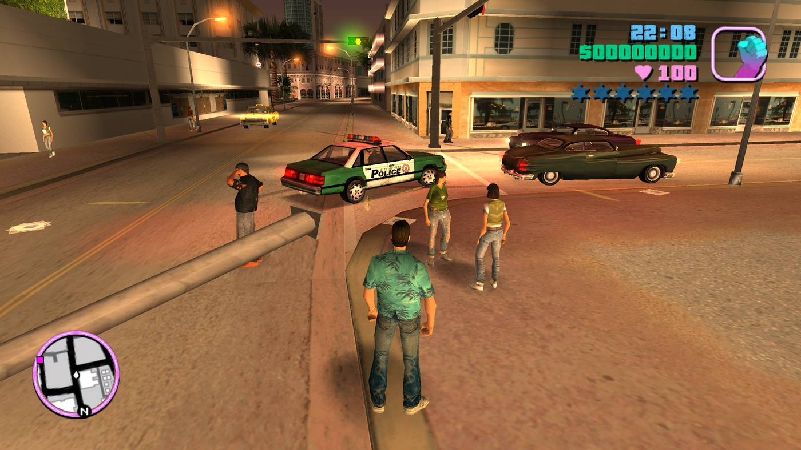

GTA Vice City
Postado 19 dezembro 2025
Enredo
GTA: Vice City é um jogo de ação em mundo aberto desenvolvido pela Rockstar Games, lançado em 2002, e é um dos títulos mais marcantes da franquia Grand Theft Auto.
O jogo se passa na cidade fictícia de Vice City, inspirada em Miami, durante os anos 1980.Você controla Tommy Vercetti, um ex-integrante da máfia que acaba de sair da prisão após 15 anos.
Após um negócio de drogas dar errado, Tommy perde:
- Dinheiro💵
- Drogas💊
A partir disso, ele passa a investigar o que aconteceu e começa a construir seu próprio império criminoso, enfrentando:
- Gangues rivais
- Traficantes
- Máfia
- Traições e corrupção
A história é fortemente inspirada em filmes como Scarface e Miami Vice.
🗺️ Mapa do jogo
Vice City é menor que San Andreas, mas muito viva e detalhada. A cidade é dividida em:
- Ocean Beach
- Vice Point
- Little Havana
- Downtown
- Porto e áreas industriais
Pontes liberam novas áreas conforme a história avança.
🎮 Jogabilidade
O jogo trouxe várias melhorias em relação ao GTA III:
- Uso de motos
- Compra de imóveis
- Negócios ilegais gerando renda
- Maior variedade de missões
- Sistema de armas mais refinado
Apesar disso, ainda não há personalização física do personagem como em San Andreas.
🚗 Veículos
- Carros esportivos
- Motos
- Helicópteros
- Barcos
- Aviões leves
Tudo com forte identidade dos anos 80.
🎵 Trilha sonora
Um dos pontos mais elogiados do jogo 🎶
Rádios com:
- Pop
- Rock
- Disco
- New Wave
- Hip-hop inicial
Músicas icônicas dos anos 80 ajudam muito na imersão.
🌟 Impacto cultural
- Considerado um dos melhores GTAs já feitos
- Estilo visual neon e clima retrô marcantes
- Personagem Tommy Vercetti é um dos mais lembrados da franquia
- Influenciou diversos jogos de mundo aberto
Postagens Recentes
Os jogos de videogame antigos são de grande importância, pois representam a fundação da indústria moderna de jogos, servindo como marco cultural e fonte de inspiração criativa para os desenvolvedores atuais...
Leia maisO primeiro homem a ganhar status de artista dos games foi o engenheiro americano Steve Russell, que em 1961 desenvolveu um jogo simples em um limitado (para os dias de hoje) computador...
Leia mais